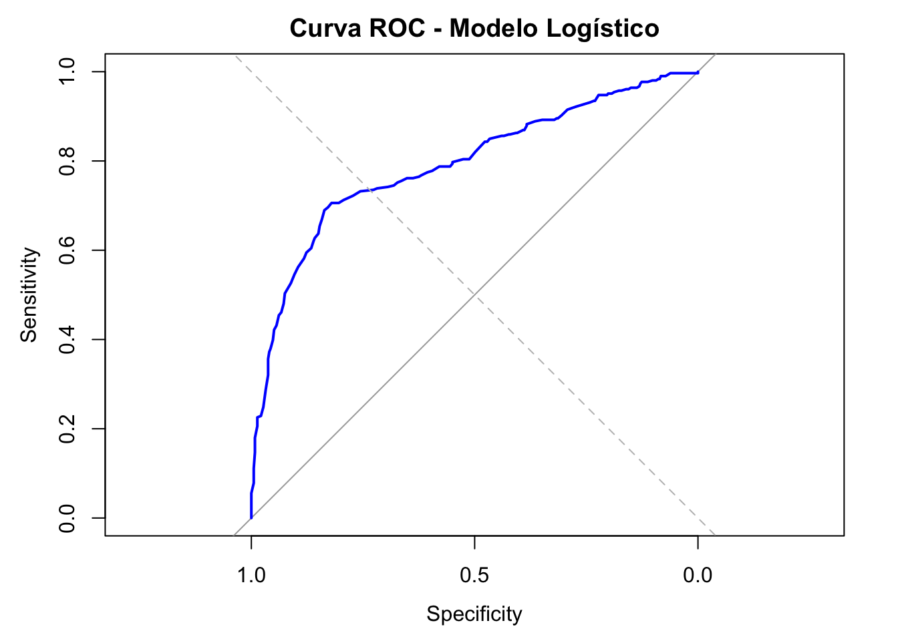
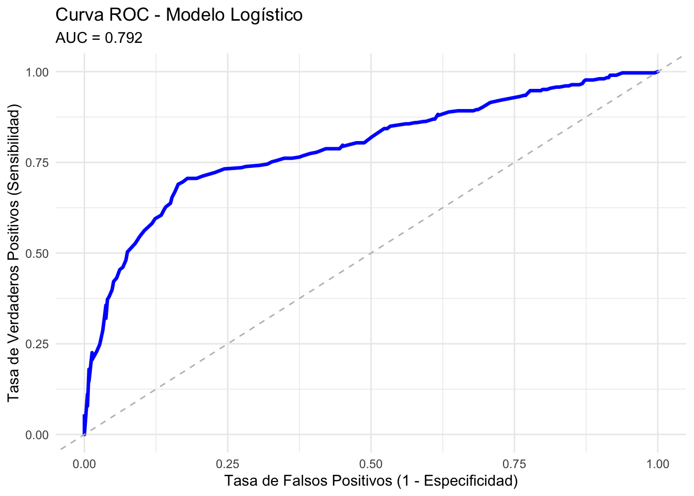
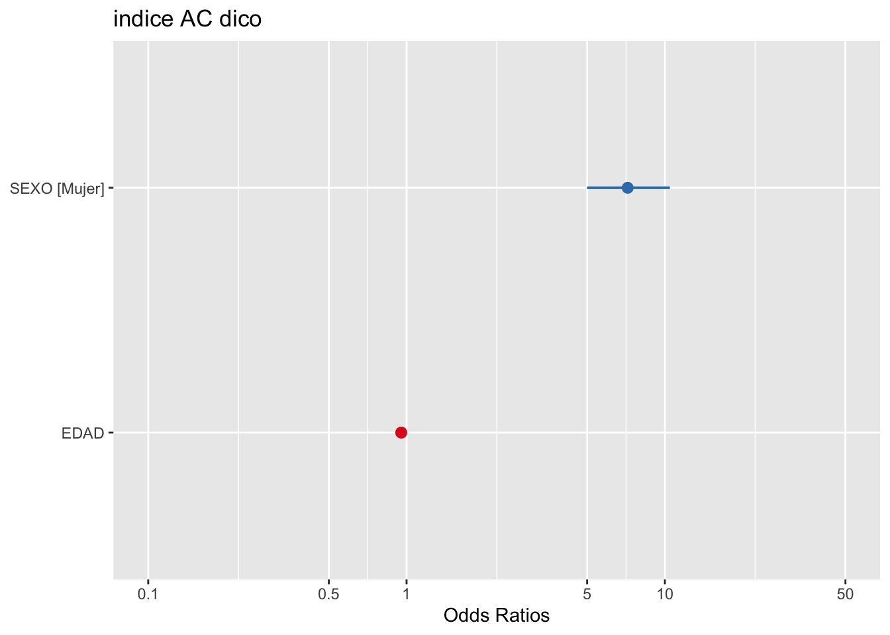

Sesión 3
Regresión Logistica Binaria
FACULTAD DE CIENCIAS SOCIALES - PUCP
Curso: POL 304 - Estadística para el análisis político 2 | Semestre
2025 - 1
Docente: Marylia Cruz
🎯 ¿Para qué sirve la Regresión Logística Binaria?
La regresión logística binaria se utiliza cuando la variable dependiente es dicotómica, es decir, solo toma dos valores posibles (por ejemplo: 1 = sí, 0 = no).
Este modelo permite estimar la probabilidad de que ocurra un evento, como ser voluntario, votar, enfermarse, etc., en función de variables predictoras (edad, género, ingreso, etc.).
📌 Ejemplos comunes de uso en Ciencia Política y Relaciones Internacionales
| Tema | Variable.dependiente | Ejemplo.de.uso |
|---|---|---|
| Participación electoral | Votó / No votó | Explicar participación según nivel educativo |
| Apoyo a la democracia | Apoya / No apoya | Evaluar efecto de confianza institucional |
| Nacionalismo | Tiene actitudes nacionalistas / No | Examinar influencia de educación o edad |
| Protesta política | Participó en protesta / No | Relacionar con desafección política o redes sociales |
| Opinión sobre política exterior | Apoya acuerdo internacional / No | Analizar efecto de orientación ideológica o región |
✅ ¿Qué representa el valor 1** en una regresión logística?**
En una regresión logística binaria, la variable dependiente solo puede tomar dos valores: 0 y 1.
- El valor 1 representa el evento que queremos predecir o explicar.
- El valor 0 representa la ausencia de ese evento.
El modelo se enfoca en estimar la siguiente probabilidad:
\[ \text{Prob}(Y = 1 \mid X) = p \]
Es decir, el modelo calcula la probabilidad de que ocurra el evento codificado como 1, dado un conjunto de variables explicativas.
📌 Ejemplos
| Variable dependiente | Significado del valor 1 |
|---|---|
voto |
La persona sí votó |
voluntario |
La persona es voluntaria |
diabetes |
La persona tiene diabetes |
ganador |
El candidato ganó la elección |
protesto |
El ciudadano participó en protesta |
🛠️ Nota técnica
Antes de ajustar el modelo, asegúrate de que el evento de interés
esté codificado como 1. Por ejemplo:
# Recodificar variable binaria: 1 = sí votó, 0 = no votó
# datos$voto_bin <- ifelse(datos$voto == "sí", 1, 0)⚙️ ¿Cómo funciona?
La regresión logística modela la probabilidad de que ocurra un evento usando la función logística (sigmoide). El modelo estima el logaritmo de los odds como una función lineal:
\[ \log\left(\frac{p_i}{1 - p_i}\right) = \beta_0 + \beta_1 X_{1i} + \beta_2 X_{2i} + \dots + \beta_k X_{ki} \]
donde \(p_i\) es la probabilidad de que el evento ocurra para el individuo \(i\).
Luego se transforma a escala de probabilidad con:
\[ p_i = \frac{e^{\beta_0 + \beta_1 X_{1i} + \dots + \beta_k X_{ki}}}{1 + e^{\beta_0 + \beta_1 X_{1i} + \dots + \beta_k X_{ki}}} \]
🧪 ¿Cuándo usarla?
Usa regresión logística binaria cuando:
- La variable dependiente es binaria (0/1)
- Quieres estimar probabilidades
- Los predictores pueden ser categóricos o numéricos
- No se cumplen los supuestos de normalidad o homocedasticidad de la regresión lineal
Si hay más de dos categorías en la variable dependiente, deberías
usar regresión logística multinomial
(multinom()).
🫶¿Cómo se realiza la regresión logística binaria en R?
Apertura de datos
library(rio)
library(dplyr)
datos=import("Base_de_datos_acoso_2019.sav")
names(datos)## [1] "SERIE" "NVONRO" "NSEGRUP" "NSE" "SEXO" "GEDAD" "EDAD" "NIVEDU"
## [9] "P10A" "P10B" "P10C" "P11A" "P11B" "P11C" "P12A" "P12B"
## [17] "P12C" "P12D" "P12E" "P12F" "P12G" "P12H" "P13A" "P13B"
## [25] "P13C" "P13D" "P13E" "P13F" "P13G" "P13H" "indiceAC" "indiceAC_dico"datos <- datos %>%
filter(!is.na(indiceAC_dico))Formateo de variables
datos$SEXO=as.factor(datos$SEXO)
datos$SEXO=factor(datos$SEXO,levels = levels(datos$SEXO),labels = c("Hombre","Mujer"))Definición del modelo
modelo1 <- glm(indiceAC_dico ~ SEXO +EDAD , data = datos, family = binomial())
summary(modelo1)##
## Call:
## glm(formula = indiceAC_dico ~ SEXO + EDAD, family = binomial(),
## data = datos)
##
## Deviance Residuals:
## Min 1Q Median 3Q Max
## -1.9273 -0.9115 -0.3939 0.8500 2.6102
##
## Coefficients:
## Estimate Std. Error z value Pr(>|z|)
## (Intercept) 0.667213 0.253400 2.633 0.00846 **
## SEXOMujer 1.970999 0.188289 10.468 < 2e-16 ***
## EDAD -0.047530 0.006107 -7.783 7.06e-15 ***
## ---
## Signif. codes: 0 '***' 0.001 '**' 0.01 '*' 0.05 '.' 0.1 ' ' 1
##
## (Dispersion parameter for binomial family taken to be 1)
##
## Null deviance: 934.67 on 678 degrees of freedom
## Residual deviance: 747.14 on 676 degrees of freedom
## AIC: 753.14
##
## Number of Fisher Scoring iterations: 4Interpretación
🔹 (Intercept) = 0.6672 El intercepto representa el log-odds (logaritmo del cociente de probabilidades) del evento cuando:
Sexo = referencia (hombre)
Edad = 0 (lo cual no es realista, pero es el punto base del modelo) No se interpreta directamente a menos que tenga sentido contextualizar la edad en 0.
🔹 SEXOMujer = 1.971 Este coeficiente indica que, manteniendo constante la edad:
Ser mujer aumenta los log-odds del evento en 1.971 unidades respecto a los hombres. Para interpretar en términos más intuitivos (odds ratio):
exp(1.971) ## [1] 7.177851- Es decir, las mujeres tienen 7.18 veces más probabilidades (odds) de que ocurra el evento (por ejemplo, ser voluntaria, apoyar algo, etc.) en comparación con los hombres, controlando por edad.
Para convertir el coeficiente de una regresión logística binaria en un porcentaje interpretable
coef_mujer <- coef(modelo1)["SEXOMujer"]
100 * (exp(coef_mujer) - 1)## SEXOMujer
## 617.7846- Ser mujer incrementa los odds del evento en un 618% en comparación con los hombres, manteniendo constantes las demás variables.
🔹 EDAD = -0.0475
Este coeficiente es negativo, lo cual indica que:
Por cada año adicional de edad, los log-odds del evento disminuyen en 0.0475 unidades, manteniendo constante el sexo. Transformando a odds ratio:
exp(-0.0475) ## [1] 0.9536105- Por cada año de edad, las probabilidades del evento disminuyen en aproximadamente un 4.64%.
100 * (exp(coef(modelo1)["EDAD"]) - 1)## EDAD
## -4.641781- Por cada año adicional de edad, los odds del evento disminuyen en un 4.64%.
Interpretación en lenguaje sencillo
Ser mujer incrementa significativamente la probabilidad del evento, mientras que ser mayor de edad disminuye ligeramente esa probabilidad. Ambos efectos son estadísticamente significativos (p < 0.001).
Decidiendo el mejor modelo
Para elegir el modelo más adecuado, se pueden comparar múltiples especificaciones utilizando criterios como:
- AIC (Akaike Information Criterion): menor AIC indica mejor ajuste penalizando la complejidad.
- LogLik (Log-likelihood): mayor valor indica mejor ajuste.
- Test de razón de verosimilitud
(
anova(m1, m2, test = "Chisq")): compara modelos anidados.
# Comparar dos modelos logísticos
modelo1 <- glm(indiceAC_dico ~ SEXO +EDAD , data = datos, family = binomial())
modelo2 <- glm(indiceAC_dico ~ SEXO +EDAD +NSEGRUP, data = datos, family = binomial())
AIC(modelo1, modelo2)## df AIC
## modelo1 3 753.1407
## modelo2 4 754.4192anova(modelo1, modelo2, test = "Chisq")## Analysis of Deviance Table
##
## Model 1: indiceAC_dico ~ SEXO + EDAD
## Model 2: indiceAC_dico ~ SEXO + EDAD + NSEGRUP
## Resid. Df Resid. Dev Df Deviance Pr(>Chi)
## 1 676 747.14
## 2 675 746.42 1 0.7215 0.3957✅ Evaluando el modelo seleccionado
Una vez elegido el modelo, evaluamos su desempeño con:
- Pseudo-R² (McFadden) – mide calidad del ajuste
El ajuste se refiere a qué tan bien el modelo representa los datos observados. En regresión logística binaria, como no se usa R² clásico (de la regresión lineal), usamos:
🔹 Pseudo-R² de McFadden Se basa en el logaritmo de la verosimilitud. Valores típicos: entre 0.2 y 0.4 se consideran un buen ajuste. Se interpreta comparativamente: un pseudo-R² más alto indica mejor ajuste.
library(pscl)## Classes and Methods for R originally developed in the
## Political Science Computational Laboratory
## Department of Political Science
## Stanford University (2002-2015),
## by and under the direction of Simon Jackman.
## hurdle and zeroinfl functions by Achim Zeileis.pR2(modelo1) # Pseudo-R2## fitting null model for pseudo-r2## llh llhNull G2 McFadden r2ML r2CU
## -373.5703709 -467.3359539 187.5311660 0.2006385 0.2413292 0.3228268- Curva ROC y AUC – mide capacidad de discriminación
Se refiere a la habilidad del modelo para distinguir entre los casos 0 y 1, es decir, entre quienes sí y no presentan el evento.
🔹 Herramienta principal: Curva ROC y AUC ROC: mide la sensibilidad vs especificidad en distintos umbrales. AUC (Área bajo la curva): valor entre 0 y 1. - 0.5: sin poder discriminativo (equivale a lanzar una moneda) - 1.0: discriminación perfecta - > 0.7: aceptable; > 0.8: buena; > 0.9: excelente
library(pROC)## Type 'citation("pROC")' for a citation.##
## Attaching package: 'pROC'## The following objects are masked from 'package:stats':
##
## cov, smooth, var# 1. Obtener los valores predichos
predicciones <- predict(modelo1, type = "response")
predicciones1=fitted(modelo1)
# 2. Crear curva ROC
roc_obj <- roc(response = datos$indiceAC_dico, predictor = predicciones)## Setting levels: control = 0, case = 1## Setting direction: controls < cases# 3. Mostrar AUC
auc(roc_obj)## Area under the curve: 0.7924# 4. Graficar curva ROC
plot(roc_obj, col = "blue", lwd = 2, main = "Curva ROC - Modelo Logístico")
abline(a = 0, b = 1, lty = 2, col = "gray") 
El modelo tiene un 79% de probabilidad de asignar una probabilidad mayor al caso positivo que al negativo elegido al azar. Es decir, el modelo discrimina bien entre quienes presentan el evento (por ejemplo, sí votan) y quienes no.
# 3. Extraer datos para ggplot
roc_df <- data.frame(
FPR = 1 - roc_obj$specificities,
TPR = roc_obj$sensitivities
)
library(ggplot2)
# 4. Graficar con ggplot
ggplot(roc_df, aes(x = FPR, y = TPR)) +
geom_line(color = "blue", size = 1.2) +
geom_abline(slope = 1, intercept = 0, linetype = "dashed", color = "gray") +
labs(
title = "Curva ROC - Modelo Logístico",
subtitle = paste("AUC =", round(auc(roc_obj), 3)),
x = "Tasa de Falsos Positivos (1 - Especificidad)",
y = "Tasa de Verdaderos Positivos (Sensibilidad)"
) +
theme_minimal()## Warning: Using `size` aesthetic for lines was deprecated in ggplot2 3.4.0.
## ℹ Please use `linewidth` instead.
## This warning is displayed once every 8 hours.
## Call `lifecycle::last_lifecycle_warnings()` to see where this warning was generated.
- Matriz de confusión – precisión de predicción
Es la proporción de observaciones correctamente clasificadas por el modelo, según un umbral (por defecto 0.5):
- Predicción = 1 si p ≥0.5, si no = 0
- Luego se compara con los valores reales (0/1)
- Se construye una matriz de confusión:
# Predicción binaria con umbral 0.5
pred <- ifelse(fitted(modelo1) >= 0.5, 1, 0)
table(Predicho = pred, Real = datos$indiceAC_dico)## Real
## Predicho 0 1
## 0 306 90
## 1 67 216📈 ¿Qué son los efectos marginales?
Los efectos marginales indican cuánto cambia la probabilidad estimada de que ocurra el evento cuando una variable predictora cambia en una unidad, manteniendo constantes las demás variables.
Marginal promedio (AME) Cambio promedio en la probabilidad para todos los individuos
library(margins)
summary(margins(modelo1))## factor AME SE z p lower upper
## EDAD -0.0088 0.0010 -9.2436 0.0000 -0.0107 -0.0069
## SEXOMujer 0.4034 0.0327 12.3224 0.0000 0.3392 0.4676Gráfico
datos$indiceAC_dico=as.factor(datos$indiceAC_dico)modelo1 <- glm(indiceAC_dico ~ SEXO +EDAD , data = datos, family = binomial())
modelo2 <- glm(indiceAC_dico ~ SEXO +EDAD +NSEGRUP, data = datos, family = binomial())
modelo3 <- glm(indiceAC_dico ~ EDAD , data = datos, family = binomial())library(sjPlot)## Learn more about sjPlot with 'browseVignettes("sjPlot")'.plot_model(modelo1, type = "est", transform = "exp") #